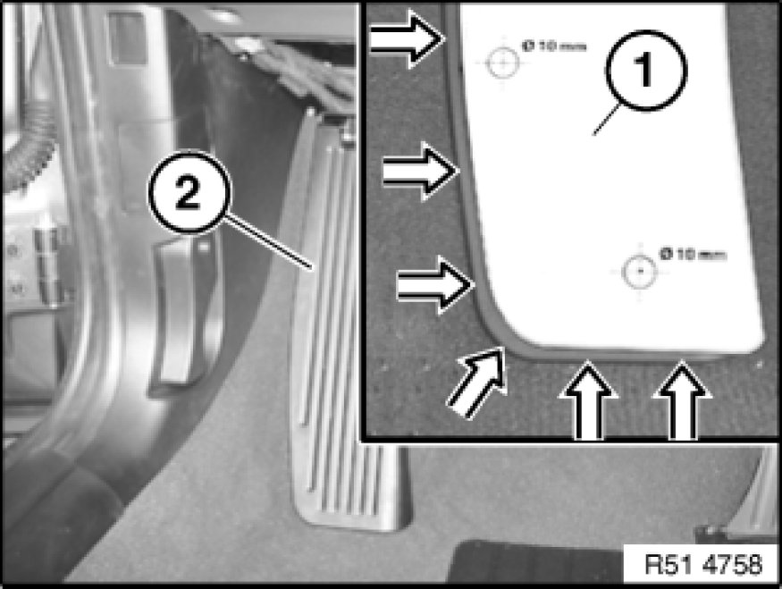
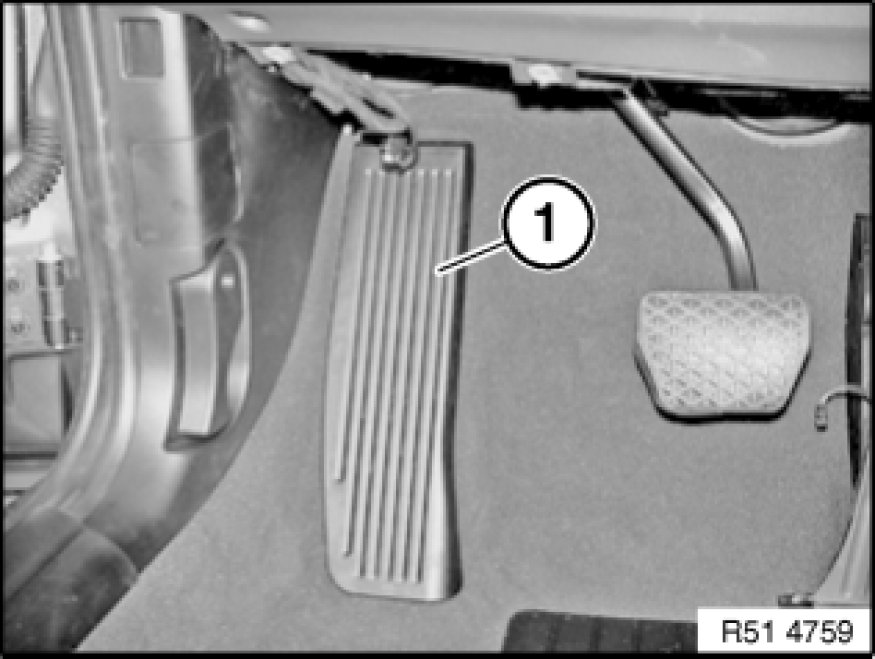
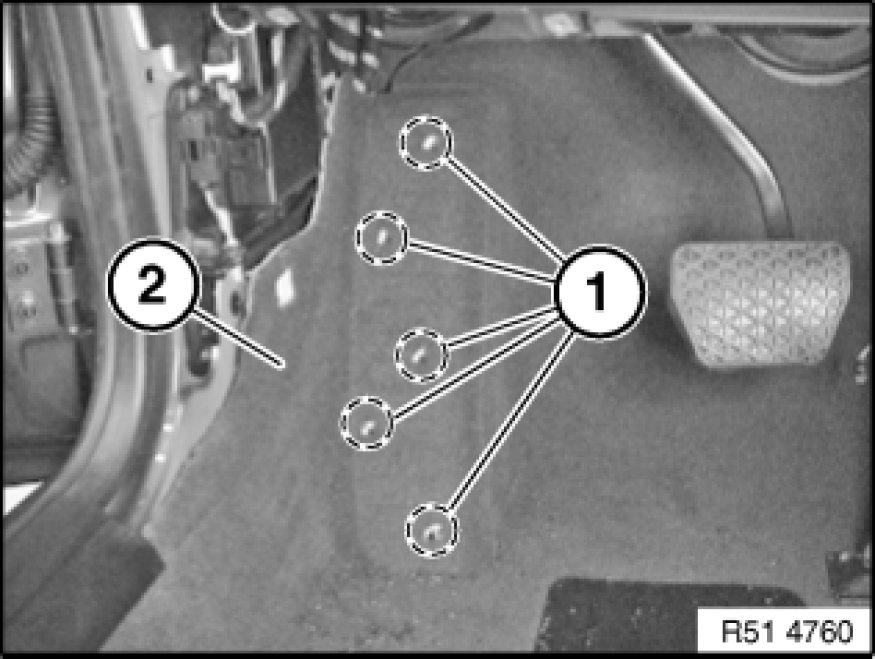
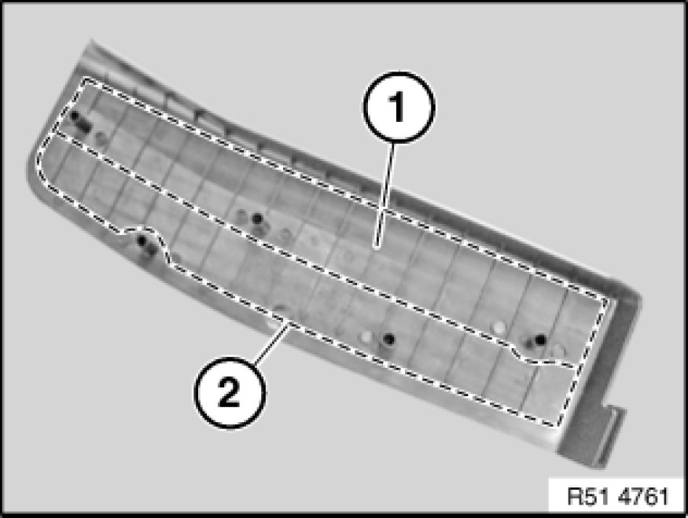

51 47 312 Replacing Footrest For Front Passenger Compartment
51 47 312 - Replacing footrest for front passenger compartment

Necessary preliminary tasks:
- Remove trim panel for pedal assembly 51 45 185 Removing and Installing/Replacing Panel For Pedals
Note:
Footrest is either bonded to carpet or secured with retaining rings from rear to carpet.
- Attachments with retaining rings are drilled out
- Bonded footrest is detached with a hot air blower
The attachment points must always be drilled out first.

Place drilling hole template (1) on footrest (2) and align to outer edge of footrest (2) (see arrows).
Mark bore holes with punch and remove drilling hole template (1).
Drill out attachment points.
-I)
- Predrill to 3 mm dia.
-II)
- Drill out to 10 mm dia.
Note:
If the footrest (2) is not bonded, it can be removed now. Continue with the next work step but one.

Bonded footrest only:
Note:
Adhesive bead must remain on carpet (risk of damage).
Heat footrest (1) with hot air blower and thereby release adhesive bead from footrest (1).
If necessary, pull off footrest (1) in inward direction.

Only when fitting retaining rings:
Remove left footwell side trim panel [1][2]51 43 070 Removing and Installing/Replacing Side Trim Panel, Footwell, on A-pillar, Left.
Drive through pins (1).
Fold carpet (2) inwards slightly and remove pins (1).

Installation:
Heat footrest (1) with hot air blower and apply adhesive bead along dashed line (2) with hot-melt adhesive gun.
Place footrest (1) on carpet and stick on.
Press footrest (1) down until adhesive bead has cooled down.